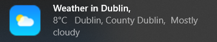
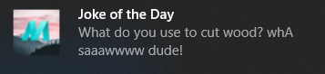
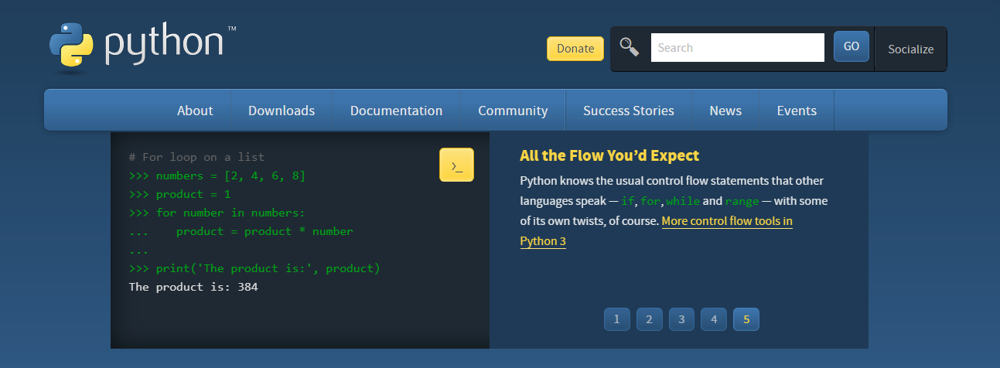
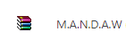
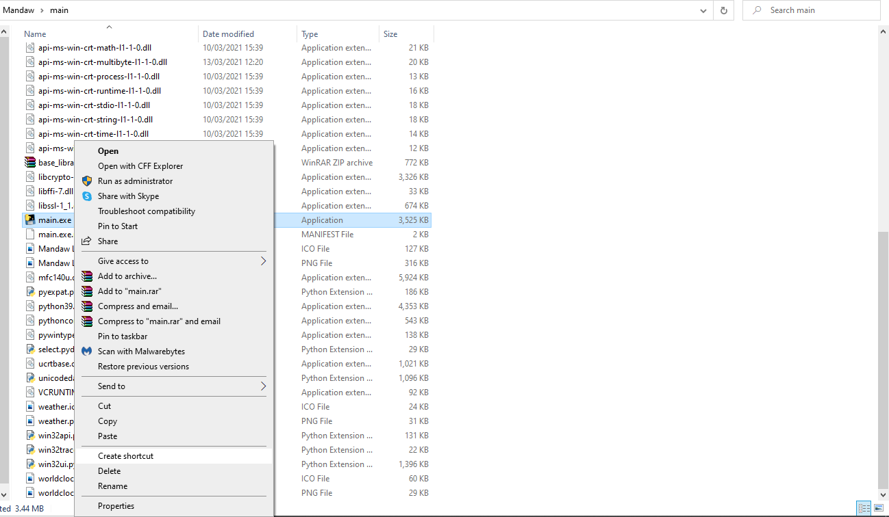
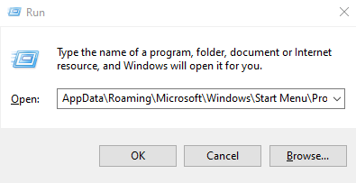
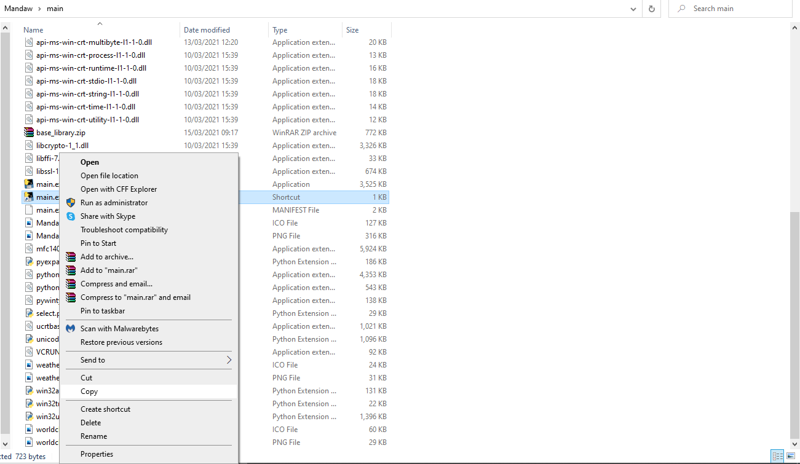
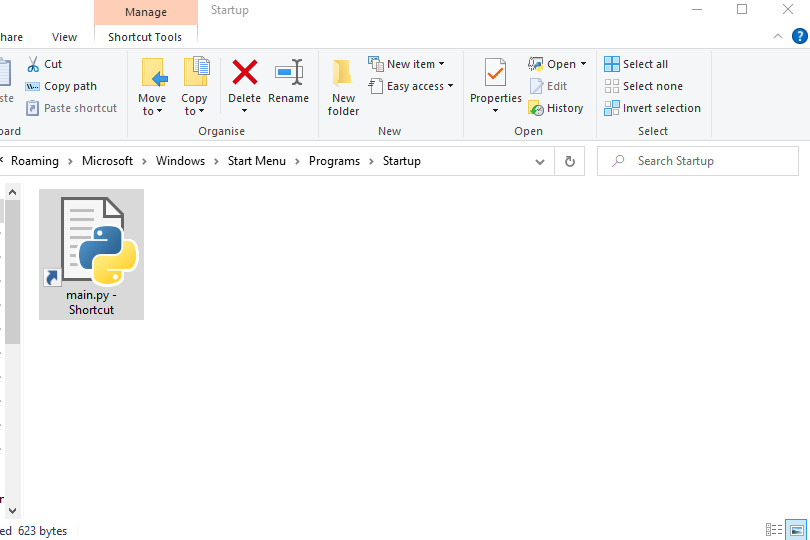

He greets you good morning every time you start your device.

Weather
He tells you the weather in the city that you live in.
Time
He tells you the time.

Joke
He tells you jokes.
How Does Mandaw Work:
Mandaw is made with Python, a popular programming language for Artificial Inteligiance. The project is currently in its alpha stage so Mandaw will be having a ton more updates later down the road.
Mandaw is made with a library for Python called Plyer. Plyer is used to send notifications to the computer. Everytime you start up your device, Mandaw will greet you with the weather, time and a joke. The weather gets its data from Google's official weather API. Mandaw locates the city you are in and then searches Google for the weather and time in that city.
No information will be stolen when using Mandaw.
Download Steps:
1: Download Python. 
Unfortunately I havent figured out a way of downloading Mandaw without Python installed. You can download Python here: here
Hover over downloads and download the latest version.
2: Download the Mandaw zip.
Download the zip: here Then extract it onto your desktop by pressing the Extract To button. 
3: Go into the unzipped folder and Right Click the main.py file. Then click Create Shortcut  4: On Windows, press the Windows Key + R and paste in this: AppData\Roaming\Microsoft\Windows\Start Menu\Programs\Startup\ And press enter.  5: Copy the main.py shortcut and paste it into the Startup folder.  
Now everytime you boot up your computer, Mandaw will run.
Note: Mandaw currently not available for Mac or Linux.